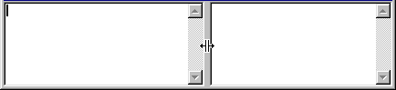

( left, right )
Displays two controls side by side with a SplitterControl between them. The splitter can be dragged with the mouse to change the relative sizes of the two sides (by adjusting their Xstretch values). If the containing window is resized, the two sides will maintain the proportions of the split.
For example:
( HorzSplit Editor ( Editor xstretch: 3 ) ) )
Would display:
Notice the specification of xstretch to set the initial proportions of the split.
Derived from Split.
See also: VertSplitControl